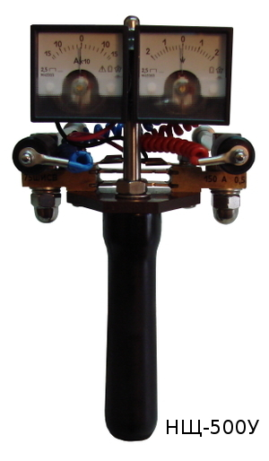
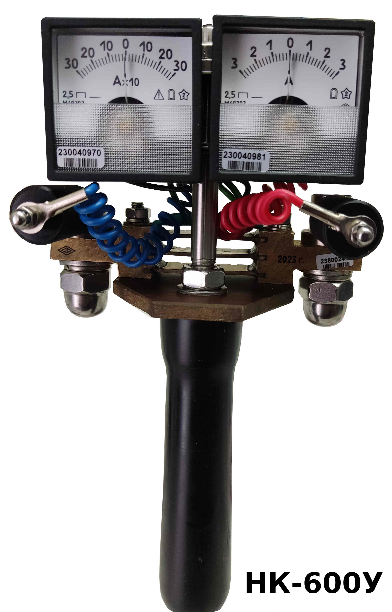
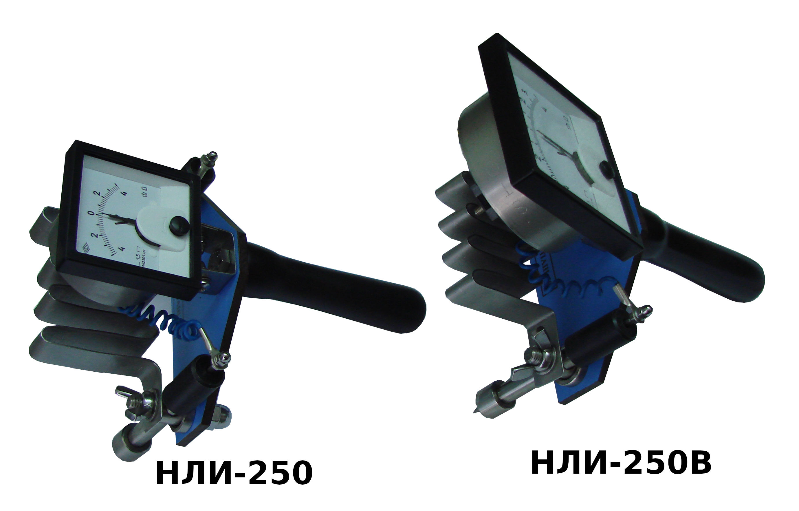
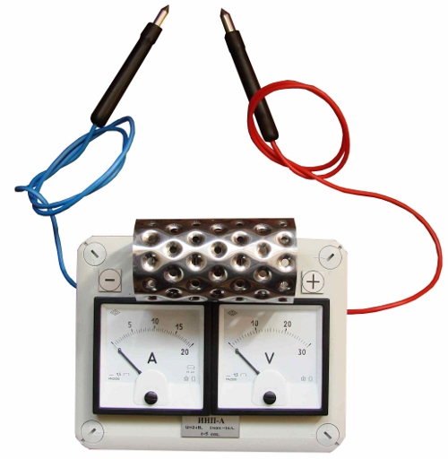
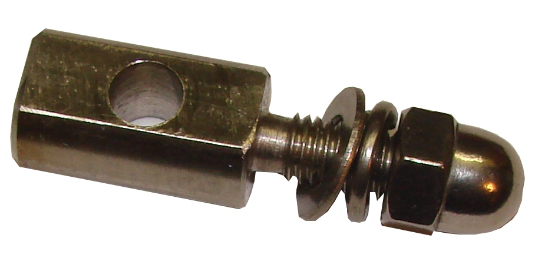
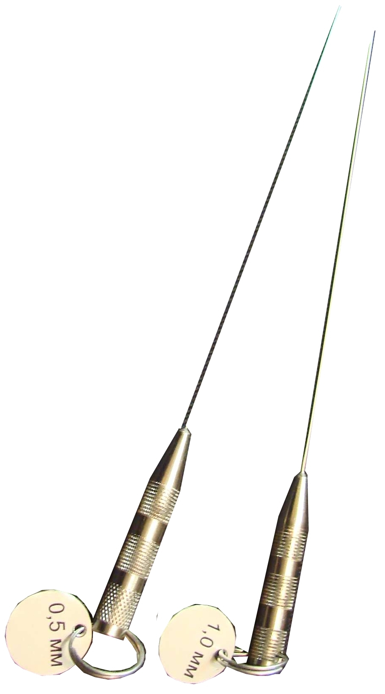
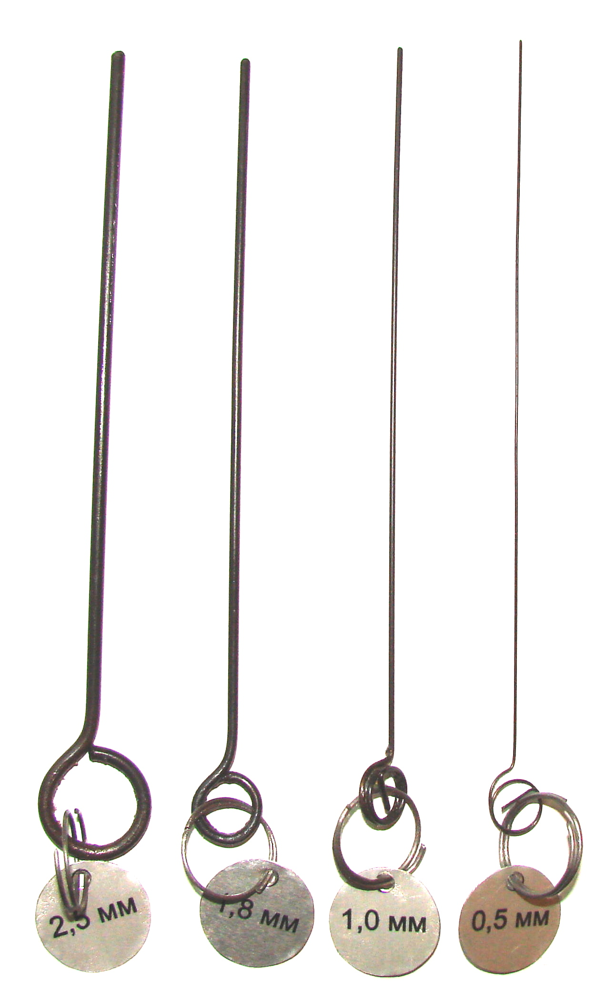
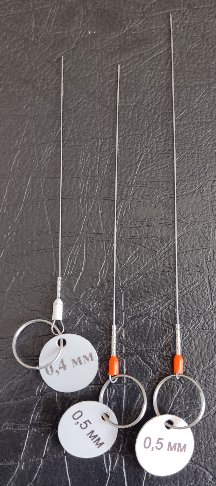
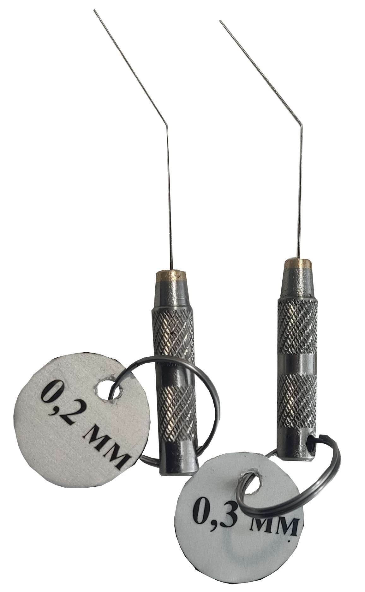
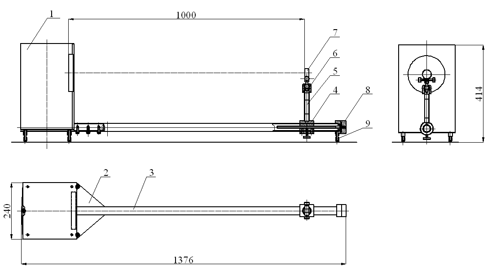

| Наименование | Цена, руб |
|
| Вилки нагрузочные для кислотных и щелочных аккумуляторов | ||
 |
Вилка нагрузочная НК-500ЛЕ (вольтметр 3-0-3 В, класс точности 1,5; сменные сопротивления на токи 65 А (50 А), 130 А (70 А), 250 А (110 А) при 1,8 В - для кислотных (при 1,0 В - для щелочных) аккумуляторов, плюс нагрузочные сопротивления 0,020 Ом, 0,025 Ом, 0,030 Ом, 0,033 Ом. По дополнительным сопротивлениям заменяет 2ДБ661-141М. |
по запросу |
 |
Вилка нагрузочная НМ-300Л (вольтметр 3-0-3 В, класс точности 1,5; нагрузочные сопротивления для проверки свинцовых стартерных аккумуляторов емкостью 40...100 Ач; 100...145 Ач; 145...200 Ач и с дополнительными нагрузочными сопротивлениями 0,020 Ом; 0,025 Ом; 0,030 Ом; 0,033 Ом - для проверки тяговых щелочных аккумуляторов. |
по запросу |
| Вилки нагрузочные для щелочных аккумуляторов: | ||
 |
Вилка нагрузочная НЩ-500 (вольтметр 2-0-2 В, амперметр 150-0-150 А, класс точности приборов 1,5; мин ток 50 А, макс. ток. 100 А при 1,0В ). | по запросу |
|  |
Вилка нагрузочнаяНЩ-500У (вольтметр 2-0-2 В, амперметр 150-0-150 А, класс точности приборов 2,5; мин ток 50 А, макс. ток. 100 А при 1,0 В, уменьшенные габариты. | по запросу |
 |
Вилка нагрузочная ПАЩ-500 (вольтметр 2-0-2 В, класс точности 1,5; сменные сопротивления на токи 50 А, 70 А, 110 А при 1,0 В). |
по запросу |
| Исполнение ПАЩ-500Л (вольтметр 2-0-2 В (по заказу 3-0-3 В), класс точности 1,5; сменные сопротивления на токи 50 А, 70 А, 110 А при 1,0 В; дополнительно прилагаются сменные нагрузочные сопротивления 0,020 Ом; 0,025 Ом; 0,033 Ом - по дополнительным сопротивлениям заменяет 2ДБ661-141М). |
по запросу | |
 |
Вилка нагрузочная НМ-300Э (вольтметр 2-0-2 В, класс точности 1,5; сменные нагрузочные сопротивления на токи: 12,5 А, 16 А, 25 А, 50 А). | по запросу |
| Вилки нагрузочные для кислотных аккумуляторов: | ||
 |
Вилка нагрузочная НК-600 (вольтметр 3-0-3 В, амперметр 300-0-300 А, класс точности приборов 1,5; мин ток 166 А, макс. ток до 300 А при 1,8 В). | по запросу |
 |
Вилка нагрузочная НК-600У (вольтметр 3-0-3 В, амперметр 300-0-300 А, класс точности приборов 2,5; мин ток 166 А, макс. ток до 300 А при 1,8 В, уменьшенные габариты). | по запросу |
 |
Вилка нагрузочная НК-600Т (вольтметр 3-0-3 В, амперметр 450-0-450 А, класс точности приборов 1,5; ток до 450 А при 1,8 В). | по запросу |
| |
Вилка нагрузочная НК-500 (вольтметр 3-0-3 В, класс точности 1,5; сменные сопротивления на токи 65 А, 130 А, 250 А при 1,8 В). |
по запросу |
| Исполнение НК-500Л (вольтметр 3-0-3 В, класс точности 1,5; сменные сопротивления на токи 65 А, 130 А, 250 А при 1,8 В; дополнительно прилагается нагрузочное сопротивление 0,030 Ом - по дополнительному сопротивлению заменяет 2ДБ661-141М). |
по запросу | |
| Вилки нагрузочные для стартерных кислотных аккумуляторов со свинцовыми выводами и перемычками: |
||
| |
Вилка нагрузочная НМ-300 (вольтметр 3-0-3 В, класс точности 1,5; нагрузочные сопротивления для проверки свинцовых стартерных аккумуляторов емкостью 40...100 Ач; 100...145 Ач; 145...200 Ач. | по запросу |
| Вилки нагрузочные для литий-ионных аккумуляторов: | ||
|  |
Вилка
нагрузочная НЛИ-250 (НЛИ-250В).
Сменные сопротивления на токи 70 А, 85 А, 117 А, 250 А,
при 3,1 В. НЛИ-250 - вольтметр М42301, 4-0-4 В, цена деления 0,2 В,
клас точности 1,5; НЛИ-250В - вольтметр М42300, 4-0-4 В, цена деления 0,1 В, клас точности 1,5. |
по запросу |
| Тестеры силового электрооборудования автомобиля: | ||
 |
Тестеры силового электрооборудования автомобиля АСГ-12-500, АСГ-12-750. |
45217 |
Тестеры силового электрооборудования автомобиля АСГ-24-500, АСГ-24-750. |
49000 | |
| Испытательные нагрузочные приборы: | ||
 |
Испытательный нагрузочный прибор ИНП-110 для определения емкости всех видов аккумуляторов и аккумуляторных батарей (кислотных, щелочных, гелевых и т. п.) напряжением от 1 до 30 В, током нагрузки от 0,2 до 9,99 А (ток нагрузки автоматически ограничивается мощностью 110 Вт). |
32702 |
|  |
Испытательный нагрузочный прибор ИНП-А-24-12. | 63049 |
| Дополнительные опции к нагрузочным вилкам: | ||
|  |
Опция Номер 1 для вертикальной установки ручки вилки (может использоваться со всеми нагрузочными вилками "ИнтерБалт"). |
5432 |
|
Другая продукция ИнтерБалт |
||
| Наименование | Цена, руб | |
|  |
Щупы круглые "ИнтерБалт" тип 1.1, тип 1.2 и тип 1.3 - для контроля зазоров. Диаметры щупов: 0,2; 0,3; 0,4; 0,5; 0,6; 0,7; 0,8; 0,9; 1,0; 1,1; 1,2; 1,3; 1,4; 1,5; 1,6; 1,7; 1,78; 2,0; 2,2; 2,3; 2,4; 2,5; 2,8; 3,0; 4,0; 4,5; 5,0; 5,5; 6,0; 7,0; 8,0; 10,0 мм . * Цена за 1 щуп: Длина щупа 20 - 80 мм Длина щупа 81 - 100 мм Длина щупа 101 до 120 мм Длина щупа 121 до 150 мм * - возможно изготовление щупов специального исполнения - других диаметров. Для щупов специального исполнения цена щупа увеличивается на 20 ... 50%. В настояще время имеются в наличии щупы круглые ИнтерБалт специального исполнения, тип 1, следующих диаметров, мм: - 3,9 (L=80 мм); 3,97 (L=100 мм); 4,88 (L=100 мм); 4,97 (L=80 мм); 4,98 (L=120 мм); 5,36 (L=100 мм); 5,93 (L=80 мм); 5,94 (L=100 мм). |
9703 9974 10248 10519 |
|   |
Щупы круглые "ИнтерБалт" тип 2.1 и тип 2.2 - для контроля зазоров. Диаметры щупов: 0,2; 0,3; 0,4; 0,5; 0,6; 0,7; 0,8; 0,9; 1,0; 1,1; 1,2; 1,3; 1,4; 1,5; 1,6; 1,7; 1,78; 1,9; 2,0; 2,2; 2,3; 2,4; 2,5; 2,8; 3,0 мм. * Цена за 1 щуп: Длина щупа 20 - 80 мм Длина щупа 81 - 100 мм Длина щупа 101 до 120 мм Длина щупа 121 до 150 мм * - возможно изготовление щупов специального исполнения - других диаметров. Для щупов специального исполнения цена щупа увеличивается на 20 ... 50%. |
8448 8721 8992 9267 |
  |
Щупы круглые "ИнтерБалт" тип 3.1 и тип 3.2 (изогнутые) для контроля зазоров в труднодоступных местах) Диаметры щупов: 0,2; 0,3; 0,4; 0,5; 0,6; 0,7; 0,8; 0,9; 1,0; 1,1; 1,2; 1,3; 1,4; 1,5; 1,6; 0,4; 0,5; 0,6; 0,7; 0,8; 0,9; 1,0; 1,1; 1,2; 1,3; 1,4; 1,5; 1,6; 1,7; 1,78; 2,0; 2,2; 2,3; 2,4; 1,78; 1,9; 2,0; 2,2; 2,3; 2,4; 2,5; 2,8; 3,0 мм. * Размеры щупов: L1=10...100 м, L2=20...100 мм, a = 45...120 градусов, цена за за 1 щуп. * - возможно изготовление щупов специального исполнения - других диаметров. Для щупов специального цена щупа увеличивается на 20 ... 50%. |
10305 |
 |
Щупы круглые "ИнтерБалт" тип 4.1, тип 4.4 и тип 4.3 (изогнутые с ручкой) для контроля зазоров в труднодоступных местах). Диаметры щупов: 0,2; 0,3; 0,4; 0,5; 0,6; 0,7; 0,8; 0,9; 1,0; 1,1; 1,2; 1,3; 1,4; 1,5; 1,6; 0,4; 0,5; 0,6; 0,7; 0,8; 0,9; 1,0; 1,1; 1,2; 1,3; 1,4; 1,5; 1,6; 1,7; 1,78; 1,9; 2,0; 2,2; 2,3; 2,4; 1,78; 2,0; 2,2; 2,3; 2,4; 2,5; 2,8; 3,0 мм. * Размеры щупов диам. от 0,2 до 0,3 мм: L=10...20 м, L1=10...20 мм, a = 90...180 градусов; Размеры щупов диам. свыше 0,3 мм до 3,0 мм: L=10...100 м, L1=20...120 мм, a = 90...180 градусов; * - возможно изготовление щупов специального исполнения - других диаметров. Для щупов специального изготовления цена щупа увеличивается на 20 ... 50%. |
11642
|
|  |
Приспособление (оптическая скамья) для установки излучателя "Абсолютно черное тело" типа Fluke-4180 или Fluke-4181 при поверке инфракрасных пирометров "Кельвин" и др. |
96000 |
Вопросы и заявки Вы можете отправить на электронную почту interbalt39@gmail.com или inter-balt@yandex.ru.
Для перехода щелкните по ссылке на желтом фоне: